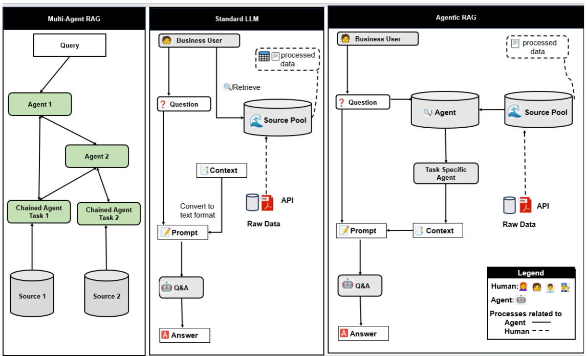
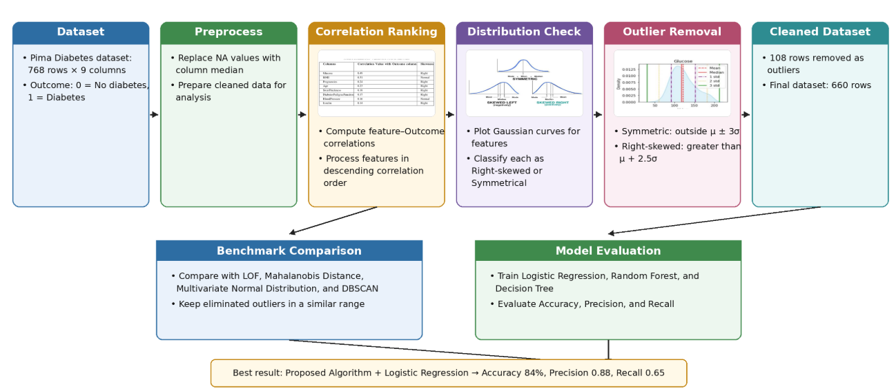

Tejaswini Katale
M.S. Student in Computer Science, University of Houston
I am a Master's student in Computer Science at the University of Houston, with expected graduation in May 2027. I am also a Research Assistant working with Prof. Lu Gao in the Department of Civil and Environmental Engineering.
My research focuses on artificial intelligence and machine learning for real-world problems. I work on AI-based methods for safety, reliability, and resilience, with current projects in airport cyber-resilience, ADS-B anomaly detection, spatio-temporal learning, large language models, and decision-support systems.
I hold a Bachelor's degree in Computer Engineering from Vishwakarma Institute of Technology, Pune, India.
I am currently based in Texas. Outside of research, I enjoy running, traveling, and writing poems. Feel free to connect and discuss research ideas or ongoing projects in AI. You can reach me at tkatale@cougarnet.uh.edu.

News
Publications



Selected Projects
Experience
Awards & Highlights
Contact
Email: tkatale@cougarnet.uh.edu
GitHub: github.com/TejaswiniKatale
LinkedIn: Add your LinkedIn link here
Google Scholar: Add your Google Scholar link here